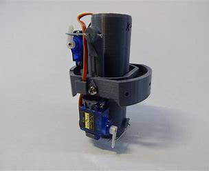
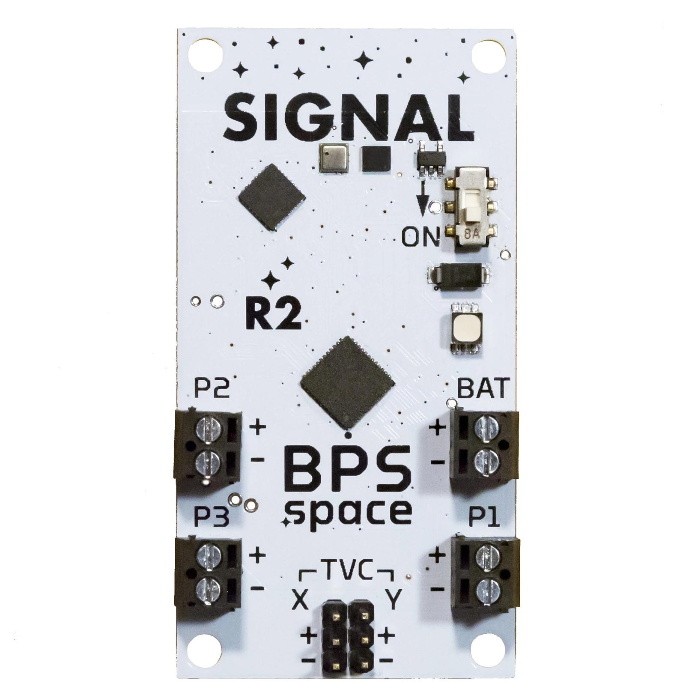
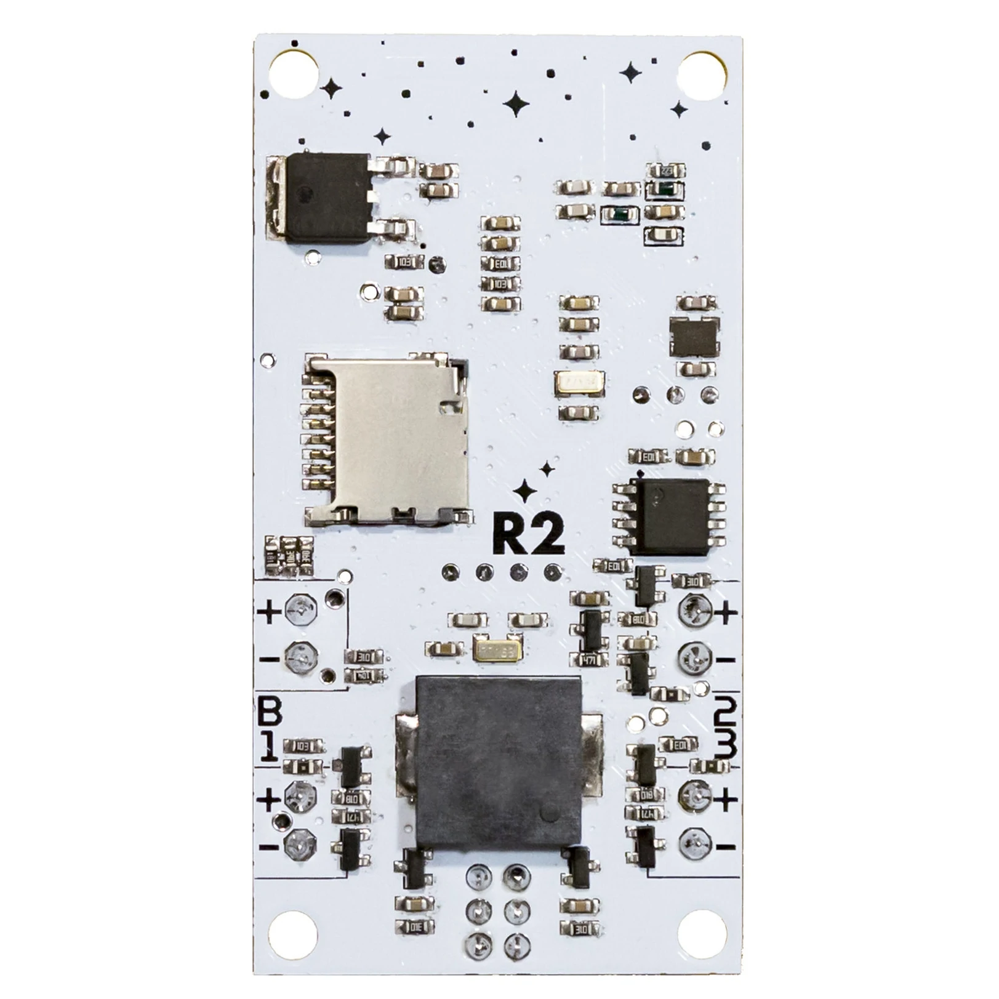

-
The parts
TVC mount
Visit BPS.space
- The major parts of the motor mount are 3D printed using PLA, which stands for polylactic acid. The structure and mechanics are built for 74mm thin-wall airframes and can withstand up to 40 Newtons of force, though it functions best with 5-20 Newtons of constant force. The mount can actuate ±5° with a full range max bandwidth of 13Hz, and nominal bandwidth of 25Hz. These parts were designed around low-cost and widely available components. Keeping repair costs low helps minimize the resources it takes to rebuild after any rapid unscheduled disassemblies.


The Flight Computer
Visit BPS.spaceThe Signal flight computer runs a high speed control loop, prioritizing separate functions depending on the progress of the flight. Thrust vectoring draws considerable current from the power source; once burnout is detected, Signal centers and locks the vectoring mount. Focus is then set on detecting apogee and triggering pyro events. A power source of at least 8V must be used - 9v alkaline or 11.1v LiPos are recommended.
 